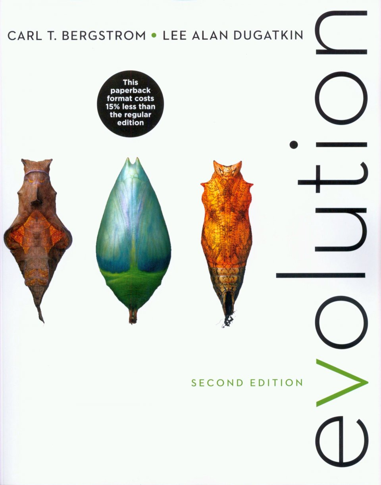

Texts
Evolution
by Bergstrom and DugatkinISBN: 0393937933

The Beak of the Finch
by Jonathan WeinerISBN: 0679400036

Syllabus
Consider the Leviathan - whales as a wonderful case study
- Whales and Darwin.
- Fins → limbs and limbs → fins.
- Whales adn the fossil record.
- Whales and the DNA evidence.
- Whales and humans → keystone species.
Frogs on islands - specific case study that gets us thinking about many big themes of the general subject of evolution.
- Biogeography.
- DNA and deep time.
- Dispersal and island biogeography.
- Coupling of geology and biology.
The Galapagos and evolution.
- Darwin and other great naturalists - looking at the world.
- What Darwin saw.
- David Lack, Grands - Ling term evolution story.
- The hidden Galapagos.
Heritable variation and selection.
Buri experiment and flies.
- Laboratory evolution.
- The Buri experiment.
- Concept of neutral evolution.
- Wright - Fisher.
Lenski experiment.
- The experiment.
- Fitness concept.
- Recent sequencing experiment with Michael Desai.
The power of the single mutation.
- Single cell.
- Bradshaw monkey flower.
- Pigeon crest → return to Darwin.
- Hoekstra - mice and mammoths.
- Antibiotic resistance.
- Influenza annual.
- Proteorhodopsin - single amino acid.
- Baleen whales - Enzyme for enamel.
- WHIM disease.
Deep time
Schedule
| Date | Time | Location | Instructor | Reading | Lecture notes |
|---|---|---|---|---|---|
| Sunday, Jan. 7 | 1:00 pm - 4:00 pm | Meeting at 159 Broad to walk to Braun B115 | Rob | TBD | -- |
| 4:00 pm - 7:00 pm | Braun B115 (lab session) | Manuel | TBD | -- | Monday, Jan. 8 | 10:00 am - 1:00 pm | Braun B115 | Rob | TBD | -- |
| 2:00 pm - 5:00 pm | Braun B115 | Rob | TBD | -- | |
| 7:00 pm - 10:00 pm | Braun B115 (lab session) | Manuel | TBD | -- | Tuesday, Jan. 9 | 9:30 am - 11:45 am | Braun B115 | Rob | TBD | -- |
| 1:00 pm - 2:30 pm | Braun B115 (lab session) | Manuel | TBD | -- | |
| 2:30 pm - 5:00 pm | Braun B115 | Rob | TBD | -- | |
| 7:00 pm - 10:00 pm | Braun B115 (lab session) | Manuel | TBD | -- | Wednesday, Jan. 10 | 9:30 am - 12:30 pm | Braun B115 | Rob | TBD | -- |
| 1:30 pm - 4:30 pm | Braun B115 | Rob | TBD | -- | |
| 7:00 pm - 10:00 pm | Braun B115 (lab session) | Manuel | TBD | -- | Thursday, Jan. 11 | 9:30 am - 12:00 pm | Braun B115 | Rob | TBD | -- |
| 1:00 pm - 2:30 pm | Braun B115 (lab session) | Manuel | TBD | -- | |
| 2:30 pm - 4:30 pm | Braun B115 | Rob | TBD | -- | |
| 7:00 pm - 10:00 pm | Braun B115 (lab session) | Manuel | TBD | -- | Friday, Jan. 12 | 9:00 am - 12:00 pm | Braun B115 | Rob | TBD | -- |
| 1:00 pm - 3:30 pm | Braun B115 | Rob | TBD | -- |